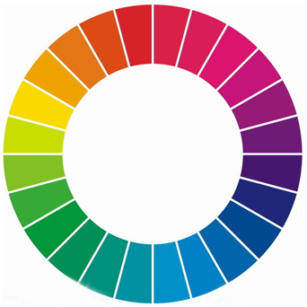

前言
为了回家后可以有一个放松舒适的空间，颜色的搭配直接影响到了每一天的心情。所以紧急学习了色彩的知识。并且慢慢写在这里。分享给大家。有哪里不对的请不吝啬的指出。谢谢
色彩不同的性格
每个颜色就和每个人一样。有不同的性格。能说会道的人比较容易做销售行业，细心的人容易做一些精细的工种例如手术。每个颜色也有自己的性格。如果我们充分理解每个颜色的性格那么就可以搭配出满意的作品。

描述
红色在可见光种波长最长，纯度最高。色感温暖，性格刚烈外向，容易引起人的注意。
象征
象征能量，刺激，火焰，血液，太阳，富足，希望，热情，浪漫，爱情。
正面
红色能让肌肉机能和血液循环加强，让人兴奋，紧张，激动，它也象征热情，让我们感受到无限的活力和精神。
喜爱红色的人，大都性格开朗，乐观向上，积极进取却有明显野心的人。在女性着装中加入红色可表现出女性浪漫和性感的一面。
负面
刺激性强，长时间观看，很容易让人视觉疲劳
红色还具有挑衅，压迫，危险，恐怖，暴力，血腥，庸俗的负面意向。
应用
在居家环境中，选用适量红色，不仅增添温暖的气氛，还可以增强时尚感和个性感。
明度越高越能体现出快乐。
明度越低越体现出紧张和不确定的感觉。
尽情期待 橙色，黄色，绿色，蓝色，紫色，黑色，白色，灰色。以及《色彩给人的感受》《用色相配色》《用明度配色》《用纯度配色》《用感情配色》